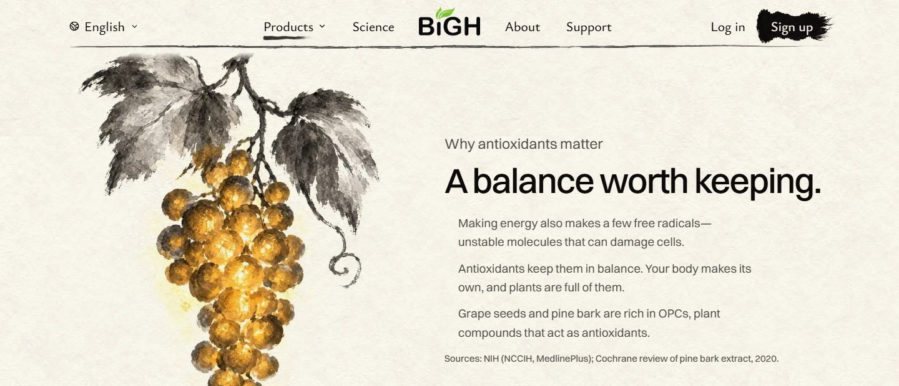
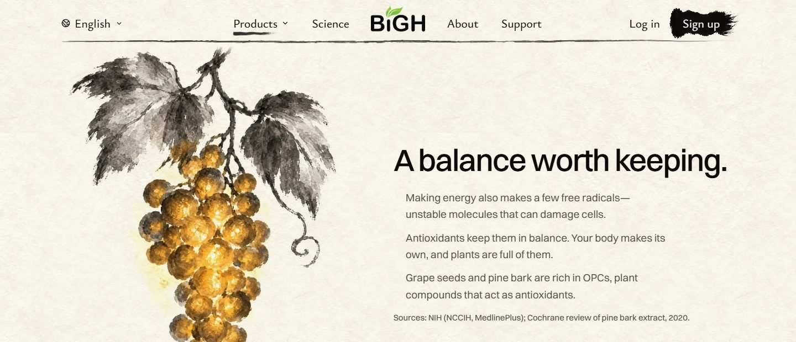
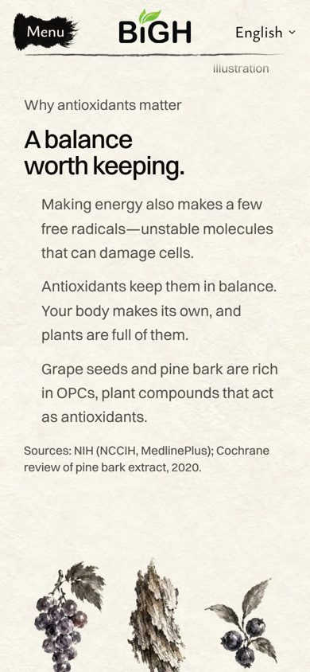
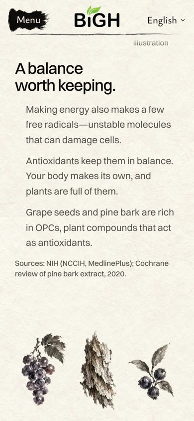
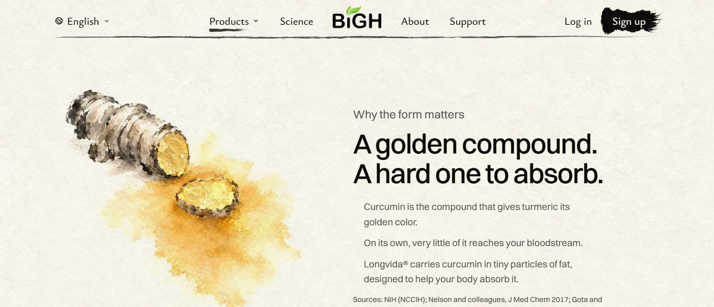
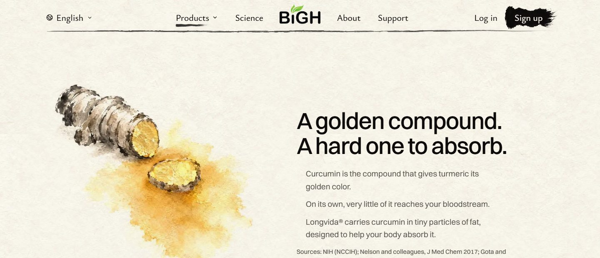
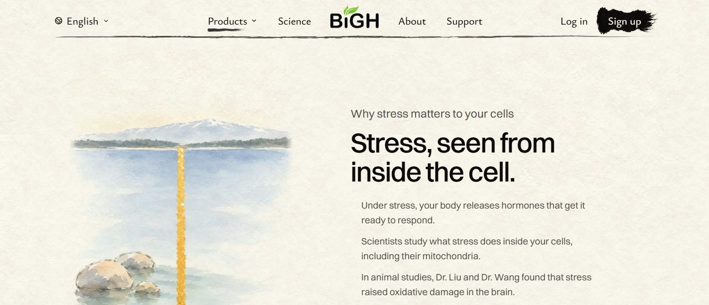
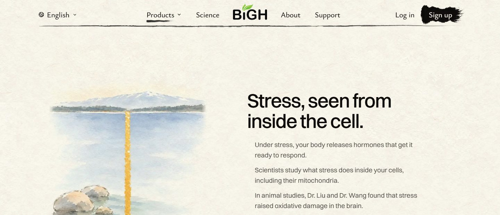

<title>Chapter Labels</title>
<meta name="claude:viewport-fit-sides" content="cover">
<link rel="preconnect" href="https://fonts.googleapis.com">
<link rel="preconnect" href="https://fonts.gstatic.com" crossorigin>
<link rel="stylesheet" href="https://fonts.googleapis.com/css2?family=Ysabeau:wght@500;600&family=Inter:wght@400;500;600&display=swap">
<style>
  /* One column of rice paper, like the site: before and after pairs. Single look on purpose. */
  :root {
    --paper: #f3efe6;
    --ink: #1b1915;
    --muted: #5c564c;
    --line: #d8d1c3;
    --display: "Ysabeau", "Iowan Old Style", Georgia, serif;
    --body: "Inter", system-ui, -apple-system, "Segoe UI", sans-serif;
    color-scheme: light;
  }
  body {
    background: var(--paper);
    color: var(--ink);
    font-family: var(--body);
    font-size: 17px;
    line-height: 1.55;
    padding-left: max(16px, env(safe-area-inset-left, 0px));
    padding-right: max(16px, env(safe-area-inset-right, 0px));
    padding-block: 28px 64px;
  }
  main { max-width: 1080px; margin: 0 auto; display: grid; gap: 48px; }
  h1, h2 { font-family: var(--display); font-weight: 600; line-height: 1.08; text-wrap: balance; margin: 0; }
  h1 { font-size: clamp(34px, 6vw, 56px); }
  h2 { font-size: clamp(24px, 3.2vw, 32px); }
  p { margin: 0; max-width: 62ch; }
  .lead { font-size: 19px; }
  .muted { color: var(--muted); font-size: 15px; }
  header { display: grid; gap: 14px; }
  section { display: grid; gap: 14px; padding-top: 24px; border-top: 1px solid var(--line); }
  .pair { display: grid; grid-template-columns: minmax(0, 1fr) minmax(0, 1fr); gap: 12px; }
  .phones { display: grid; grid-template-columns: repeat(2, minmax(0, 220px)); gap: 12px; }
  figure { margin: 0; display: grid; gap: 6px; min-width: 0; }
  figure img { width: 100%; height: auto; display: block; border: 1px solid var(--line); border-radius: 6px; background: #fff; }
  figcaption { font-size: 14px; color: var(--muted); }
  .reply { padding: 18px 20px; border: 1.5px solid var(--ink); border-radius: 12px; display: grid; gap: 8px; }
  @media (max-width: 640px) { .pair { grid-template-columns: minmax(0, 1fr); } }
</style>

<main>
  <header>
    <p class="muted">BiGH website · product pages, part 4 · November 16, 2026</p>
    <h1>The small labels over headings</h1>
    <p class="lead">On NuriCell you found the small grey line over each chapter heading strange three times (“Why cellular health matters”, “What’s inside”, “The research”), and it came off there. Advanced OPC, Turmerific and Nature Calm still show it on every chapter. This takes it off them too; nothing else changes.</p>
    <p class="muted">Before and after on the live pages (the after is the live page with the labels hidden). Green Bee Propolis numbers its labels as part of its own chapter system, so it stays as it is. The buy chapter keeps its line, which is the product’s tagline.</p>
  </header>

  <section aria-labelledby="opc">
    <h2 id="opc">Advanced OPC Formula</h2>
    <div class="pair">
      <figure><figcaption>Before</figcaption></figure>
      <figure><figcaption>After</figcaption></figure>
    </div>
    <div class="phones">
      <figure><figcaption>Phone, before</figcaption></figure>
      <figure><figcaption>Phone, after</figcaption></figure>
    </div>
  </section>

  <section aria-labelledby="turm">
    <h2 id="turm">Turmerific</h2>
    <div class="pair">
      <figure><figcaption>Before</figcaption></figure>
      <figure><figcaption>After</figcaption></figure>
    </div>
  </section>

  <section aria-labelledby="nc">
    <h2 id="nc">Nature Calm</h2>
    <div class="pair">
      <figure><figcaption>Before</figcaption></figure>
      <figure><figcaption>After</figcaption></figure>
    </div>
  </section>

  <section class="reply" aria-labelledby="reply">
    <h2 id="reply">Your call</h2>
    <p>Reply <strong>yes</strong> to take the labels off all three pages, or <strong>no</strong> to keep them.</p>
  </section>
</main>
